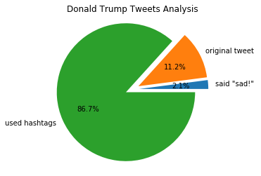
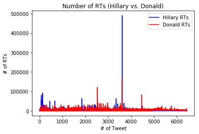
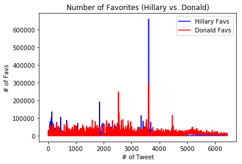

Tweet Analysis Graphs
I got my data for the following four graphs from
this site.
This pie chart represents an analysis of Hillary Clinton's tweets from January 1, 2016 until October 1, 2016.
From the dataset I used, I was able to determine how many of her tweets were her own (not retweeted from a different user) and how
many tweets used hashtags. Comparing this pie chart to Trump's pie chart, we can see that almost 60 percent of Clinton's tweets
are original, compared to Trump at only 11 percent. One could conclude that Clinton felt the need to write more original tweets to
come across as more in touch with her voters. I think this pie chart is a useful representation of how Clinton tried to reach her audience during the primaries up until one month before the election. Twitter has proved to be a powerful platform, especially during this past election, so this dataset and these graphs could be useful for future, potential presidential candidates. This is a reliable analysis of Clinton's tweets during this time period becuase the dataset had no outliers or missing values.

This pie chart represents an analysis of Donald Trump's tweets from January 1, 2016 until October 1, 2016.
From the dataset I used, I was able to determine how many of his tweets were his own (not retweeted from a different user) and how
many tweets used hashtags. We can see that almost 87 percent of Trump's tweets use hashtags, meaning he could have reached a larger
audience of people on Twitter. If a user was looking at tweets with a specific hashtag that Trump might have used, they would have come across his profile, which in turn could have benefited him. I think this pie chart is a useful representation of how Trump tried to reach his audience during the primaries up until one month before the election. Twitter has proved to be a powerful platform, especially during this past election, so this dataset and these graphs could be useful for future, potential presidential candidates. This is a reliable analysis of Trump's tweets during this time period becuase the dataset had no outliers or missing values.

This line graph shows on average how many retweets per tweet the presidential candidates got during this election period. This graph shows that overall, it seems that Hillary Clinton got more retweets per tweet compared to her opponent, Donald Trump. The amount of retweets a tweet gets is a good indicator of how the candidates supporters feel about their specific views and ideas. This data could be used to analyze how social media, specifically the candidates tweets, affected the voters opinions about them leading up to election day.

This line graph shows on average how many favorites per tweet the presidential candidates got during this election period. This graph shows that overall, it seems that towards the beginning Hillary Clinton got more favorites per tweet but during the second half of this period, Donald Trump got more favorites per tweet. The amount of favorites a tweet gets is a good indicator of how the candidates supporters feel about their specific views and ideas. This data could be used to analyze how social media, specifically the candidates tweets, affected the voters opinions about them leading up to election day.